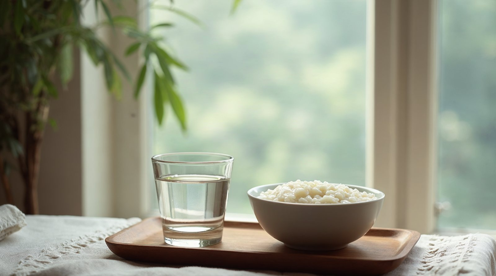
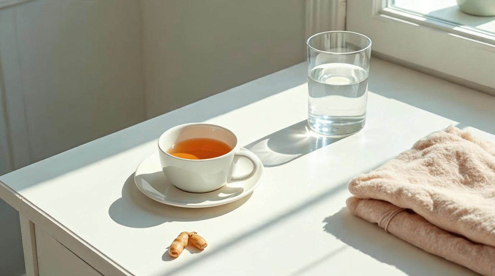
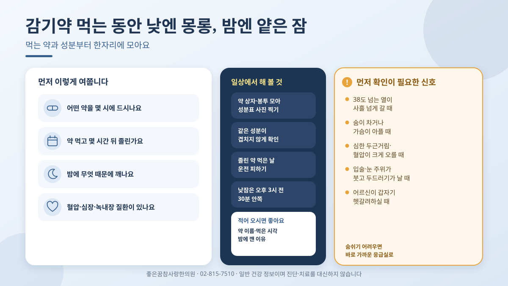

이종호 한의사 감수좋은꿈참사랑한의원 대표원장 (한의사 면허번호 19769)발행 2026-11-27 · 수정 2026-11-27
이 글의 차례
겨울 감기에 걸려 종합감기약이나 콧물약, 기침약을 며칠 드시다 보면 "낮에는 머리가 멍하고 눈이 감기는데, 정작 밤에는 잠이 얕고 자꾸 깬다"는 분이 많으세요. 낮과 밤이 뒤바뀐 것 같다고들 하시죠.
그러니까 사실은 원인이 두 갈래예요. 감기 자체와 감기약은 다른 얘기거든요. 감기 자체로 열이 오르내리고 코가 막혀 입으로 숨을 쉬고, 누우면 콧물이 목 뒤로 넘어가 기침이 나는 것도 잠을 끊어요. 그런데 약에 든 성분이 영향을 주는 경우도 있어요.
콧물을 줄이는 항히스타민 성분 가운데에는 졸음과 멍함을 부르는 게 있고, 코막힘을 줄이는 성분이나 일부 감기약에 든 카페인은 몸을 깨워 잠들기 어렵게 할 수 있어요.
그래서 먼저 약 상자나 약 봉투의 성분표를 확인해 보세요. 약사에게 '이 약을 저녁에 먹어도 잠에 지장이 없는지', '지금 먹는 다른 약과 같은 성분이 겹치지 않는지' 물어보시는 것부터 권해요. 그와 함께 실내 습도와 베개 높이를 조절해 코막힘과 밤기침을 줄이고, 낮잠은 짧게 자며 몸이 회복할 시간을 넉넉히 주세요.
처방받은 약은 처방한 의사나 약사와 상의 없이 줄이거나 끊지 않아요. 숨이 차거나 열이 사흘 넘게 이어지면 진료가 먼저예요.
왜 감기약을 먹는 동안 낮과 밤의 잠이 뒤바뀐 듯 느껴질까요
- 콧물과 재채기를 줄이는 항히스타민 성분 가운데 오래전부터 쓰여 온 일부 성분은 뇌로 들어가 졸음을 부를 수 있습니다. 먹고 몇 시간 동안 멍하고 반응이 느려지며, 사람에 따라 다음 날 아침까지 머리가 무겁게 남기도 합니다.
- 같은 성분을 밤에 먹으면 잠드는 데는 도움을 주는 것처럼 느껴져도, 잠은 오히려 얕아져 자고 나도 개운하지 않다고 말하는 분이 있습니다. 입마름 때문에 밤중에 깨기도 합니다.
- 코막힘을 줄이는 성분(예: 슈도에페드린, 페닐에프린)은 혈관을 좁히고 몸을 깨우는 쪽으로 작용해, 저녁에 먹으면 가슴이 두근거리고 잠들기 어렵다고 느끼는 분이 있습니다.
- 일부 종합감기약이나 두통약에는 카페인이 함께 들어 있습니다. 하루 세 번 먹으면 저녁 약에 든 카페인이 밤잠에 남을 수 있습니다.
- 기침을 줄이는 성분 가운데에는 어지럼과 몽롱함을 부르는 것이 있어, 낮 동안 집중이 떨어질 수 있습니다.
- 감기 자체도 잠을 흔듭니다. 열이 오르내리면 땀에 젖어 깨고, 코가 막히면 입으로 숨을 쉬어 목이 마르며, 누우면 콧물이 목 뒤로 넘어가 기침이 터집니다.
- 몸이 처지니 낮에 소파나 침대에 오래 누워 있게 되고, 긴 낮잠과 줄어든 햇빛이 밤잠을 더 늦춥니다.
- 어르신은 같은 약이라도 졸음과 어지럼을 더 크게 느끼기 쉽고, 항히스타민 성분 때문에 소변이 잘 나오지 않거나 밤에 일어났을 때 비틀거리는 일이 생길 수 있어 더 조심합니다.
- 한의학에서는 감기 끝무렵 열은 내렸는데 가슴이 답답하고 잠이 얕으며 입이 마른 모습을, 다 풀리지 않은 열이 남아 있거나 땀을 많이 흘리며 몸의 진액이 줄어든 것으로 설명하기도 합니다.
먼저 이렇게 여쭙니다
- 감기 증상이 언제 시작되었는지, 열과 콧물, 코막힘, 기침, 목 통증 가운데 무엇이 가장 불편한지 여쭙니다.
- 어떤 약을 언제부터, 하루 몇 번, 몇 시에 드시는지 여쭙니다. 약국에서 산 약과 병원에서 처방받은 약을 나눠 여쭙니다.
- 종합감기약과 해열진통제, 콧물약을 함께 드시는지, 같은 성분이 겹치지 않는지 확인했는지 여쭙니다.
- 낮에 졸음과 멍함이 언제 가장 심한지, 약을 먹고 몇 시간 뒤인지 여쭙니다.
- 밤에 잠들기 어려운지, 자주 깨는지, 깨는 이유가 기침인지 코막힘인지 입마름인지 여쭙니다.
- 평소 고혈압, 심장 질환, 녹내장, 전립선 비대, 갑상선 질환이 있는지 여쭙니다. 이런 경우 일부 감기약 성분에 더 조심해야 할 수 있습니다.
- 운전이나 기계를 다루는 일을 하시는지, 커피와 술은 어떻게 드시는지 여쭙니다.
- 한약이나 다른 영양제를 함께 드시는지 여쭙니다.

일상에서 먼저 해 볼 수 있는 것
약 확인하기
- 지금 먹는 약 상자와 약 봉투를 한자리에 모으고, 휴대폰으로 성분표를 찍어 둡니다.
- 종합감기약을 먹으면서 해열진통제를 따로 먹고 있다면 같은 성분(예: 아세트아미노펜)이 겹치지 않는지 확인합니다. 같은 성분을 겹쳐 먹으면 하루 권장량을 넘기기 쉽습니다.
- 약국에서 약을 살 때 '낮에 운전해야 한다', '밤에 잠이 얕다'처럼 지금 상황을 말하고, 졸음이 덜한 성분이나 낮과 밤에 나눠 먹는 제품이 있는지 물어봅니다.
- 처방받은 약이라면 먹는 시각을 바꿔도 되는지 약사에게 먼저 물어보고, 임의로 줄이거나 끊지 않습니다.
- 약을 먹은 시각과 그 뒤 졸음, 두근거림, 잠을 짧게 적어 두면 어떤 약이 어떤 영향을 주는지 보입니다.
낮 동안
- 졸음을 부르는 약을 먹은 날에는 운전과 자전거, 높은 곳에서 하는 일을 피합니다.
- 낮잠은 오후 3시 전에 30분 안쪽으로 짧게 잡니다. 몸이 아파 더 쉬어야 한다면 누워 있되, 커튼을 열어 방을 밝게 둡니다.
- 열이 내린 날에는 오전에 창가에서 10분쯤 햇빛을 보거나 집 안을 천천히 걸어 몸에 낮이라는 신호를 줍니다.
- 커피와 에너지 음료로 약 기운을 이기려 하지 않습니다. 카페인이 든 감기약을 먹고 있다면 커피는 더 줄입니다.
- 따뜻한 물을 자주 마시고, 입맛이 없어도 죽이나 국처럼 부드러운 음식을 조금씩 먹습니다.
저녁과 잠자리
- 저녁 약에 코막힘 성분이나 카페인이 들어 있는지 확인하고, 들어 있다면 약사와 상의해 먹는 시각을 조정할 수 있는지 물어봅니다.
- 잠들기 전 생리식염수로 코를 헹구거나 따뜻한 수건을 코 위에 잠시 얹어 두면 코가 덜 막힌다는 분이 있습니다.
- 콧물이 목 뒤로 넘어가 기침이 난다면 베개를 조금 높이거나 수건을 접어 어깨 아래부터 받쳐 상체를 약간 세워 봅니다.
- 실내 습도는 40~60% 정도로 맞춥니다. 가습기가 없다면 젖은 수건을 널어 두어도 됩니다. 난방은 너무 덥지 않게 20~22도쯤으로 둡니다.
- 따뜻한 물이나 꿀을 탄 물을 조금 마시면 목이 덜 칼칼하다는 분도 있습니다. 다만 돌이 지나지 않은 아기에게는 꿀을 주지 않습니다.
- 땀을 많이 흘린다면 머리맡에 갈아입을 잠옷과 수건을 두고, 젖으면 바로 갈아입습니다.
- 술은 약과 함께 졸음과 어지럼을 키우고 잠을 더 얕게 만들 수 있어 감기약을 먹는 동안에는 마시지 않습니다.
감기가 나은 뒤
- 약을 끊은 뒤에도 며칠은 낮잠이 길고 밤잠이 늦어진 리듬이 남을 수 있습니다. 일어나는 시각부터 평소대로 돌리고 아침 빛을 보는 것으로 리듬을 되찾습니다.

상황별 예시
- 예를 들어 아침 출근 전에 종합감기약을 먹은 직장인이 오전 회의 내내 눈이 감기고 머리가 멍한 경우, 약국에서 지금 먹는 약의 성분을 보여 주고 낮 동안 졸음이 덜한 약이 있는지 물어봅니다. 그날은 운전 대신 대중교통으로 출근합니다.
- 예를 들어 하루 세 번 먹는 감기약을 저녁 9시에 먹은 뒤 가슴이 두근거리고 새벽 2시까지 잠들지 못하는 경우, 약 봉투에 코막힘 성분이나 카페인이 있는지 확인하고, 저녁 약을 조금 일찍 먹어도 되는지 약사나 처방한 의사에게 물어봅니다.
- 예를 들어 코막힘 때문에 입을 벌리고 자다 목이 바짝 말라 밤에 서너 번씩 깨는 경우, 잠들기 전 코를 헹구고 머리맡 습도를 높이며, 머리맡에 물을 두어 깼을 때 한 모금 마시고 바로 다시 눕습니다.
- 예를 들어 감기약을 드시던 어르신이 밤에 화장실에 가려다 비틀거리시고, 소변이 잘 나오지 않는다고 하시는 경우, 다음 약을 드시기 전에 약사나 의사에게 바로 알려 약을 다시 상의합니다. 밤에는 침대 옆에 작은 조명을 켜 두고 일어나실 때 잠시 앉았다 일어나시도록 합니다.
- 예를 들어 감기는 다 나았는데 약을 먹는 동안 생긴 낮잠 습관 때문에 밤 1~2시가 되어야 잠드는 경우, 낮잠을 끊고 일어나는 시각을 평소대로 되돌리는 것부터 시작합니다.
자주 하는 오해
- 감기약을 먹으면 잠이 잘 오니 수면제 대신 먹어도 된다고 여기는 분이 있지만, 감기약은 잠을 위한 약이 아니고 잠을 얕게 만들거나 다음 날까지 멍함을 남길 수 있습니다.
- 감기약은 다 비슷하니 이것저것 함께 먹어도 괜찮다고 생각하기 쉽지만, 종합감기약과 해열진통제, 콧물약을 함께 먹으면 같은 성분이 겹칠 수 있습니다.
- 약 때문에 졸린 것이니 커피를 더 마시면 된다고 여기기 쉽지만, 카페인이 든 감기약과 겹치면 밤잠이 더 흐트러지고 가슴 두근거림이 커질 수 있습니다.
- 아플 때는 하루 종일 누워 있는 것이 가장 좋다고 생각하는 분도 있습니다. 몸이 쉬는 것은 필요하지만, 낮과 밤의 구분 없이 누워 있으면 감기가 나은 뒤에도 잠 리듬이 한동안 흐트러질 수 있습니다.
- 처방받은 약 때문에 졸리면 스스로 반만 먹거나 끊어도 된다고 여기기 쉽지만, 먹는 양과 시각은 처방한 의사나 약사와 상의해 조정합니다.
스스로 점검해 보세요
- 지금 먹는 감기약의 성분을 확인해 본 적이 없다.
- 종합감기약과 해열진통제, 콧물약 가운데 두 가지 이상을 함께 먹고 있다.
- 약을 먹고 1~3시간 뒤 참기 어려운 졸음이나 멍함이 온다.
- 저녁 약을 먹은 뒤 가슴이 두근거리거나 잠들기 어렵다.
- 코막힘이나 기침 때문에 밤에 두 번 이상 깬다.
- 감기에 걸린 뒤 낮잠이 하루 1시간을 넘는다.
- 약을 먹는 동안에도 운전을 하거나 술을 마신 날이 있다.
한의원에서 함께 살필 수 있는 경우
- 감기는 거의 나았는데 잠이 얕고 가슴이 답답하며 입이 마른 느낌이 이어지는 경우
- 감기를 앓은 뒤 기운이 떨어지고 식은땀이 나며 쉽게 피로한 경우
- 감기에 자주 걸려 그때마다 약을 먹고 잠이 흐트러지는 일이 반복되는 경우
- 감기약과 함께 한약을 먹어도 되는지, 어떤 순서로 먹으면 좋을지 상의하고 싶은 경우
좋은꿈참사랑한의원에서는 첫 방문 때 감기 증상이 시작된 시기와 지금 가장 불편한 증상, 드시는 약의 이름과 먹는 시각, 낮의 졸음과 밤의 잠을 차례로 여쭙습니다. 약 상자나 봉투, 성분표 사진을 가져오시면 이야기가 빨라집니다. 그다음 맥부터 짚어 보고, 혀의 색과 설태, 배를 살펴 남은 열이나 몸의 진액 상태, 소화가 어떤지 확인합니다.
그 뒤 잠자리 환경과 낮잠 조절처럼 생활에서 할 것을 함께 정하고, 필요하면 침이나 한약을 상의합니다. 한약재 가운데에도 마황처럼 몸을 깨우는 성질을 가진 약재가 있어, 이미 코막힘 약을 드시는 중이라면 그 내용을 함께 고려합니다. 숨이 차거나 고열이 이어지는 등 다른 진료가 먼저 필요해 보이면 그렇게 안내해 드립니다.
다시 오시면 지난번 이야기를 이어서 여쭙고, 감기가 지나간 뒤 잠의 리듬이 어떻게 돌아오는지 함께 봅니다.
얼마나 지켜보고 언제 상담할까요
- 감기약을 먹는 동안에는 약 먹은 시각과 졸음, 밤잠을 함께 기록하며, 약사와 상의해 먹는 시각이나 제품을 바꾼 뒤 2~3일 지켜봅니다.
- 감기약을 끊고 며칠 지나면 낮의 멍함이 줄어드는 경우가 많습니다. 그 뒤에도 잠이 얕거나 늦어진 리듬이 남아 있다면 일어나는 시각과 낮잠을 정리해 1~2주 더 지켜봅니다.
- 감기 증상이 열흘 넘게 이어지거나, 약을 끊은 뒤 2주가 지나도 잠이 돌아오지 않는다면 상담을 받아 보세요.
- 아래 신호가 있으면 기다리지 말고 진료를 받습니다.
이렇게 기록해 오시면 상담이 쉬워집니다
- 지금 먹는 약 이름과 성분표 사진, 하루 먹는 횟수와 시각
- 약을 먹은 뒤 졸음, 멍함, 두근거림이 나타난 시각
- 밤에 깬 횟수와 이유(기침, 코막힘, 입마름, 땀)
- 감기 증상이 시작된 날과 열이 있었던 날
- 낮잠 시간과 하루 누워 있던 시간
- 평소 앓는 질환과 복용 중인 다른 약, 영양제, 한약
약 봉투는 버리지 마시고 사진 한 장 찍어 두세요. 나중에 '그때 그 약' 하고 떠올리기가 생각보다 어렵거든요.
감기는 지나가도 잠의 리듬은 조금 늦게 돌아오는 경우가 많아요. 원래 그래요. 며칠 누워 지낸 몸이 바로 예전처럼 움직이지 않는 건 이상한 게 아니에요.
치료는 제가 맡을게요. 대신 하나만 부탁드려요. 낮에 아무리 멍해도 낮잠은 짧게 끊어 주세요. 딴 건 몸이 하자는 대로 편하게 쉬셔도 돼요.
궁금한 건 약 봉투 사진을 들고 오셔서 편하게 물어보세요.
이런 증상은 먼저 확인이 필요합니다
- 38도 이상의 열이 사흘 넘게 이어지거나, 열이 내렸다가 다시 오르는 경우
- 숨이 차거나 가슴이 아프고, 숨 쉴 때 쌕쌕거리는 소리가 나는 경우
- 스스로를 해칠 생각이 들면 ☎ 109로 바로 연락하세요.
이런 신호가 있으면 한의원보다 가까운 병원이나 응급실을 먼저 찾으세요.
관련 글
- 겨울 감기로 감기약이나 진통제를 며칠 먹고 난 뒤 속이 쓰리고 입맛이 떨어질 때는 어떻게 살피나요?
- 침을 삼킬 때마다 목이 따끔하게 아픈 초겨울 감기 초반에는 무엇을 먼저 살피나요?
- 낮에는 졸린데 밤에는 잠이 안 올 때는 어떻게 살피나요?

여쭙는 것
- 감기 증상이 언제 시작되었는지, 열과 콧물, 코막힘, 기침, 목 통증 가운데 무엇이…
- 어떤 약을 언제부터, 하루 몇 번, 몇 시에 드시는지 여쭙니다. 약국에서 산 약과…
- 종합감기약과 해열진통제, 콧물약을 함께 드시는지, 같은 성분이 겹치지 않는지 확인했…
생활에서 해 볼 것
- 지금 먹는 약 상자와 약 봉투를 한자리에 모으고, 휴대폰으로 성분표를 찍어 둡니다.
- 종합감기약을 먹으면서 해열진통제를 따로 먹고 있다면 같은 성분(예: 아세트아미노펜)…
- 약국에서 약을 살 때 '낮에 운전해야 한다', '밤에 잠이 얕다'처럼 지금 상황을…
한의원에서 함께 살필 것
- 감기는 거의 나았는데 잠이 얕고 가슴이 답답하며 입이 마른 느낌이 이어지는 경우
- 감기를 앓은 뒤 기운이 떨어지고 식은땀이 나며 쉽게 피로한 경우
- 감기에 자주 걸려 그때마다 약을 먹고 잠이 흐트러지는 일이 반복되는 경우
먼저 확인이 필요한 신호
- 38도 이상의 열이 사흘 넘게 이어지거나, 열이 내렸다가 다시 오르는 경우
- 숨이 차거나 가슴이 아프고, 숨 쉴 때 쌕쌕거리는 소리가 나는 경우
- 스스로를 해칠 생각이 들면 109로 바로 연락하세요.
한눈에 보는 표
| 구분 | 핵심 |
|---|---|
| 여쭙는 것 | 감기 증상이 언제 시작되었는지, 열과 콧물, 코막힘, 기침, 목 통증 가운데 무엇이 가장 불편한지 여쭙니다. 어떤 약을 언제부터, 하루 몇 번, 몇 시에 드시는지 여쭙니다. 약국에서 산 약과 병원에서 처방받은 약을 나눠 여쭙니다. |
| 생활에서 해 볼 것 | 지금 먹는 약 상자와 약 봉투를 한자리에 모으고, 휴대폰으로 성분표를 찍어 둡니다. 종합감기약을 먹으면서 해열진통제를 따로 먹고 있다면 같은 성분(예: 아세트아미노펜)이 겹치지 않는지 확인합니다. 같은 성분을 겹쳐 먹으면 하루 권장량을 넘기기 쉽습니다. |
| 한의원에서 함께 살필 것 | 감기는 거의 나았는데 잠이 얕고 가슴이 답답하며 입이 마른 느낌이 이어지는 경우 감기를 앓은 뒤 기운이 떨어지고 식은땀이 나며 쉽게 피로한 경우 |
| 먼저 확인이 필요한 신호 | 38도 이상의 열이 사흘 넘게 이어지거나, 열이 내렸다가 다시 오르는 경우 숨이 차거나 가슴이 아프고, 숨 쉴 때 쌕쌕거리는 소리가 나는 경우 |
자주 묻는 질문
감기약 때문에 졸린 건지, 감기 때문에 졸린 건지 어떻게 알 수 있나요?
약을 먹은 시각과 졸음이 온 시각을 며칠 적어 보면 흐름이 보입니다. 먹고 1~3시간 뒤에 졸음이 몰렸다가 풀린다면 약의 영향을 생각해 볼 수 있으니, 약사에게 성분을 보여 주고 상의해 보세요.
밤에 잠이 안 오는데 감기약을 한 번 더 먹어도 되나요?
잠을 위해 감기약을 더 먹는 것은 권하지 않습니다. 정해진 횟수와 양을 넘기면 같은 성분을 과하게 먹게 될 수 있어, 잠이 어렵다면 약사나 의사에게 지금 상황을 말하고 상의하세요.
감기약과 한약을 함께 먹어도 되나요?
함께 드시는 경우도 있지만, 약재와 성분에 따라 조심할 점이 있습니다. 한약을 상의하실 때 드시는 감기약 이름과 성분표를 알려 주시면 함께 고려해 정합니다.
아이가 감기약을 먹고 밤에 더 보채요.
아이에 따라 일부 감기약 성분에 졸음 대신 오히려 들뜨고 보채는 반응을 보이기도 합니다. 아이 약은 나이와 체중에 맞는 양이 중요하니 소아청소년과나 약사에게 반응을 알리고 상의하세요.
감기가 나았는데도 밤잠이 늦어진 채로 돌아오지 않아요.
앓는 동안 길어진 낮잠과 누워 지낸 생활이 리듬을 뒤로 밀어 놓은 경우가 많습니다. 일어나는 시각부터 평소대로 돌리고 아침 빛을 보며 1~2주 지켜보고, 그래도 돌아오지 않으면 상담을 받아 보세요.
좋은꿈참사랑한의원은 재진 때 지난번 이야기부터 이어서 여쭙니다. 진료시간과 예약은 오시는 길에서 확인하세요.
어디서 상담받을 수 있나요?
좋은꿈참사랑한의원은 서울 동작구 만양로2길 2 신성빌딩 3층·5층(서울 동작구 상도동, 7호선 상도역 3번 출구 근처)에 있습니다. 한의사 3명(이종호 대표원장, 조영기 수석진료원장, 정원영 진료원장)이 진료합니다. 진료시간은 평일 09:30~20:00(점심 13:00~14:00), 토·일·공휴일 09:30~15:00이며, 방문 전 전화로 확인을 권합니다. 예약은 네이버 예약, 카카오톡 상담, 전화 02-815-7510로 받습니다.
이 글은 일반적인 건강 정보이며 개인의 진단이나 치료를 대신하지 않습니다. 증상이 있거나 복용 중인 약이 있다면 진료를 통해 확인하세요. 치료 효과는 개인마다 다를 수 있습니다.
작성 기준: 일반적으로 알려져 있는 건강 정보를 참고해 정리했습니다(대표원장 감수). 증상 기록은 1~2주 동안 하루 1회, 비슷한 시간에 적어 오시면 지난 상태와 비교하기 쉽습니다.